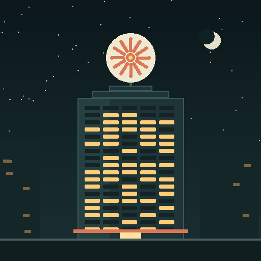

01 · DISCOVER
Search widely
Scout and deterministic code search the field for candidates worth a first look.
Attention is not a recommendation
The vision for sourced, adversarial AI research—with bounded authority and operator-controlled trading custody.

Turn a hostile, noisy market into inspectable research—then stop before custody.
Scout and deterministic code search the field for candidates worth a first look.
Price, authorities, liquidity and executable exit conditions are checked before paid judgment.
Five blind specialists interpret the same sourced evidence without reading one another.
Red Team tries to break the thesis. Risk reduces size. Deterministic Compliance can stop it.
An unsigned call—or refusal—is retained with its evidence and later outcome marks.
The goal is not one more powerful model. It is an organization whose reasoning and authority can be inspected.